Deep Learning on Large-Scale Data and Specialized Tasks
A from-scratch CNN baseline vs. a fine-tuned ImageNet ResNet-50
1. Problem Statement
We study fine-grained food classification on Food-101, with 101 classes, 101,000 real-world food images, with a fixed train/validation/test split. The goal is to compare three models under the same evaluation protocol: a simple CNN trained from scratch, a pretrained ResNet-50 with the backbone frozen, and a pretrained ResNet-50 with full fine-tuning. We report accuracy, macro-F1, parameter counts, training time, inference time, learning curves, confusing classes, and representative prediction examples.
2. Dataset and EDA
Dataset: Food-101 (Bossard et al., 2014), a benchmark for fine-grained multi-class food recognition. It contains 101 classes and 101,000 images, with an official split of 75,750 training images and 25,250 test images. The training set is further split into train/validation with a stratified 10% validation split using a fixed seed of 42.
Preprocessing: images are resized to the model input size, normalized with ImageNet mean and standard deviation, and paired with a consistent split for all runs. The same data split is reused across seeds and model families to ensure a controlled comparison.
EDA: the notebook pipeline downloads the dataset, reviews class balance, inspects representative images, analyse pixel value distribution and implement image hashing for within-class near-duplicate detection.
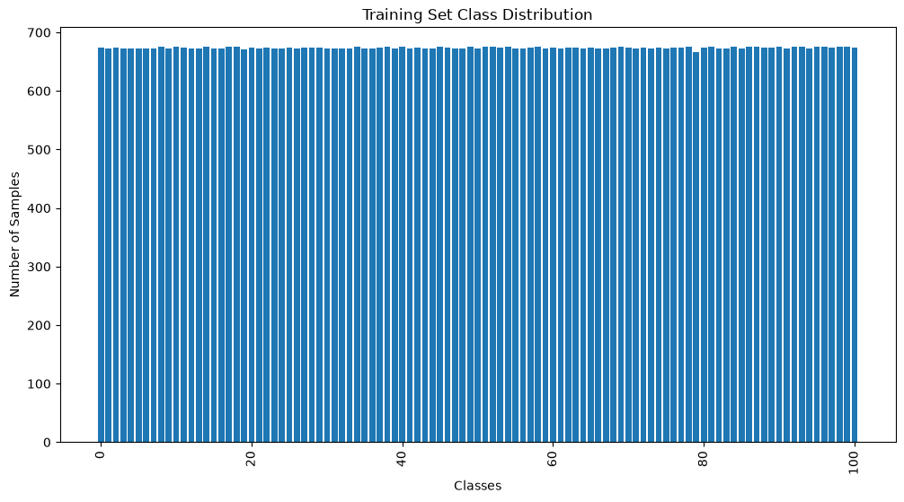
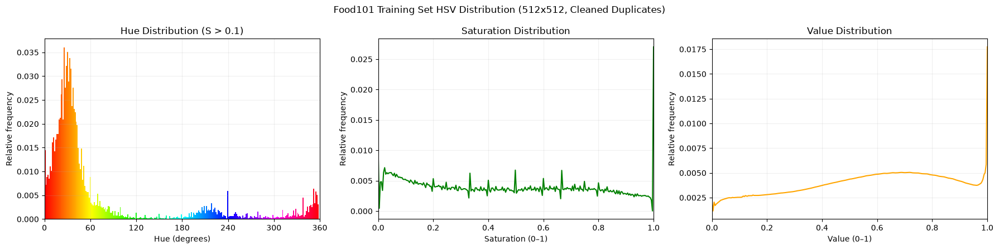
3. Methodology
| Model | Role | Input size | Total parameters | Trainable parameters |
|---|---|---|---|---|
| Assignment 1 CNN | From-scratch reference baseline | 128×128 | 8,829,349 | 8,829,349 |
| ResNet-50 (frozen backbone) | Controlled ablation / linear probe | 224×224 | 23,714,981 | 206,949 |
| ResNet-50 (full fine-tuning) | Main pretrained model | 224×224 | 23,714,981 | 23,714,981 |
From-scratch CNN: The Assignment 1 CNN architecture is reused and trained from random initialization on Food-101. It contains four convolutional blocks (Conv3×3, ReLU, MaxPool2) with 32, 64, 128, and 256 output channels, followed by a fully connected classifier with 512 hidden units and 101 outputs. Dropout is disabled.
Pretrained ResNet-50: Both configurations use torchvision ResNet-50 initialized with ImageNet IMAGENET1K_V2 weights. The original 1000-class output layer is replaced with a Linear(2048, 101) classification head. The frozen-backbone variant optimizes only the 206,949-parameter head, with all backbone parameters frozen and BatchNorm layers held in evaluation mode. Full fine-tuning updates all 23,714,981 parameters.
Controlled experiment: The hypothesis is that full fine-tuning produces higher test accuracy and macro-F1 than training only the classification head. Backbone trainability is the changed factor; the data split, input resolution, augmentation, optimizer, learning rate, weight decay, batch size, epoch budget, seeds, hardware, and mixed-precision setting are held fixed between the two ResNet-50 configurations.
The from-scratch CNN serves as a reference baseline rather than part of the controlled ablation, since it also differs in initialization, input resolution, learning rate, and parameter count. All three configurations use cross-entropy loss on raw logits and are evaluated with top-1 accuracy and macro-F1.
4. Experimental Setup
- Dataset: Food-101, containing 101 classes and 101,000 RGB images.
- Data split: 68,175 training images, 7,575 validation images, and 25,250 official test images. Validation is a stratified 10% split of the official training partition.
- Split seed: 42, fixed across all models and training runs.
- Training seeds: 42, 67, and 69, giving nine runs across the three configurations.
- Preprocessing: ImageNet normalization; RandomResizedCrop (scale 0.7-1.0) and RandomHorizontalFlip during training; resize followed by center crop during validation and testing.
- Optimizer: AdamW with weight decay 1e-4 for all models.
- Learning rate: 1e-3 for the from-scratch CNN; 1e-4 for both ResNet-50 configurations.
- Epochs: 30 per run, without a learning-rate scheduler or early stopping.
- Batch size: 128, with drop_last enabled for training.
- Mixed precision: CUDA autocast and gradient scaling enabled during training.
- Model selection: The checkpoint with the highest validation macro-F1 is restored. The official test set is evaluated exactly once per run and is never used for model selection.
- Controlled ablation: Frozen backbone versus full fine-tuning, with backbone trainability as the changed factor and other experimental settings fixed.
- Evaluation: Test accuracy, macro-F1, per-class precision/recall/F1, confusion matrices, correct and incorrect prediction examples, training time, and inference latency.
- Hardware: One NVIDIA A100-SXM4-80GB GPU.
- Software: PyTorch 2.11.0+cu128, CUDA 12.8, and torchvision 0.26.0.
- Data-cleaning limitation: The EDA notebook identified 162 training images for duplicate removal, but the reported training runs used the unmodified official split. The analysis also identified 102 train-test near-duplicate pairs, representing at most 0.40% of test images.
5. Results
Test accuracy and macro-F1 are reported as mean ± standard deviation over training seeds 42, 67, and 69. Training time and inference latency are the means over the same three runs. All experiments were conducted on one NVIDIA A100-SXM4-80GB.
| Model | Role | Image size | Test accuracy | Test macro-F1 | Train time | Inference (ms/sample) |
|---|---|---|---|---|---|---|
| Assignment 1 CNN | From-scratch baseline | 128×128 | 40.18% ± 2.38 | 39.74% ± 2.48 | 1,342.5 s | 0.416 |
| ResNet-50 (frozen backbone) | Controlled ablation | 224×224 | 69.29% ± 0.06 | 68.96% ± 0.08 | 1,252.0 s | 0.730 |
| ResNet-50 (full fine-tuning) | Main pretrained model | 224×224 | 84.20% ± 0.10 | 84.19% ± 0.15 | 1,698.1 s | 0.623 |
Training time includes all 30 training epochs and the validation pass after each epoch. Inference latency was measured over the full 25,250-image test set after two warm-up batches, without mixed precision.
Key takeaway
Full fine-tuning improves mean test accuracy by 14.91 percentage points and mean test macro-F1 by 15.23 percentage points over the frozen-backbone variant. The improvement is consistent across all three seeds and supports the hypothesis under the specified 30-epoch experimental protocol.
This improvement comes at the cost of training 23,508,032 additional backbone parameters and 35.6% greater mean training time. The from-scratch CNN achieves substantially lower accuracy but has lower measured inference latency at its smaller input resolution.
Training behavior: Full fine-tuning selects its best validation macro-F1 checkpoint at epochs 4, 9, and 4 for the three seeds, then exhibits overfitting as training continues. In contrast, the frozen-backbone model selects epoch 30 in every run, with validation performance still improving at the end of training.
Training and validation curves
Click any figure to open it full-size.
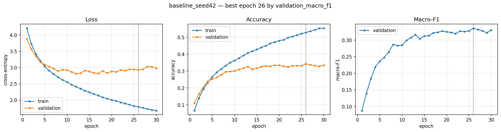
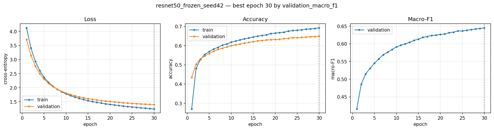
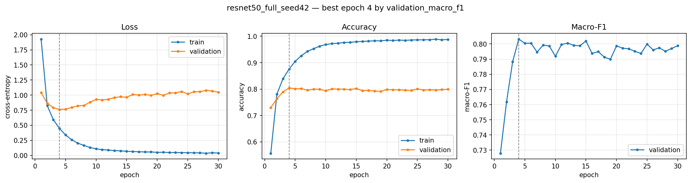
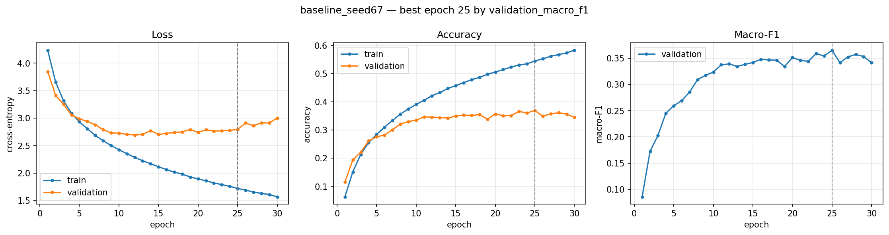
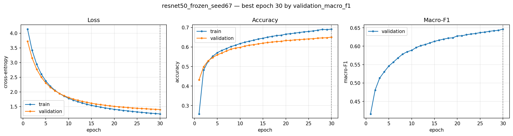
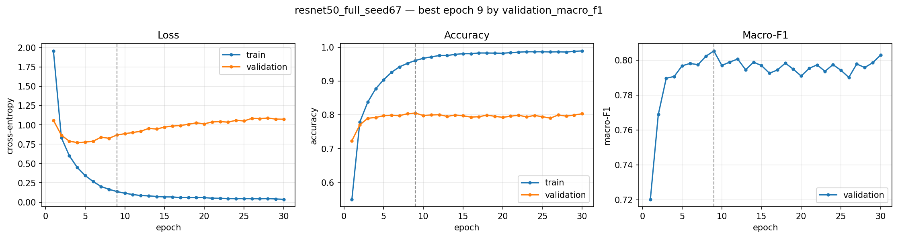
Confusion counts
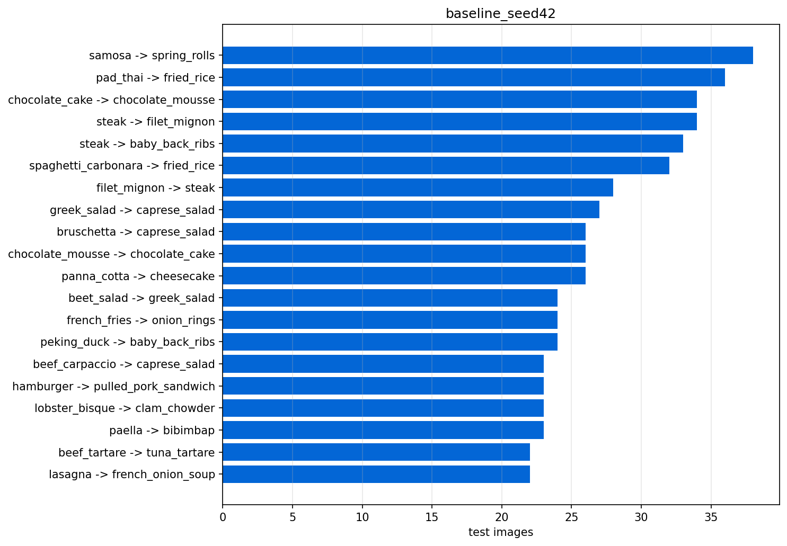
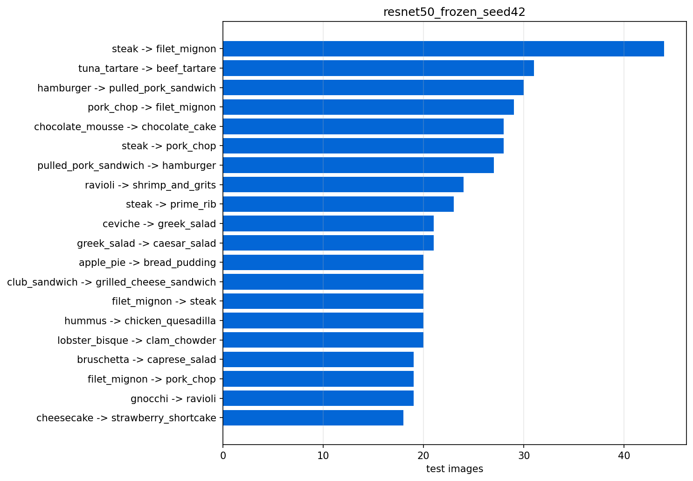
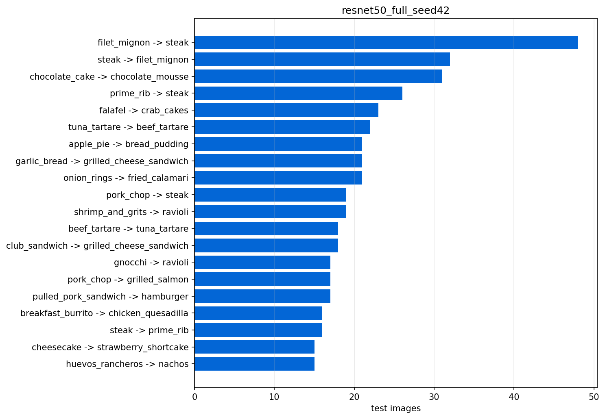
Correct and incorrect predictions
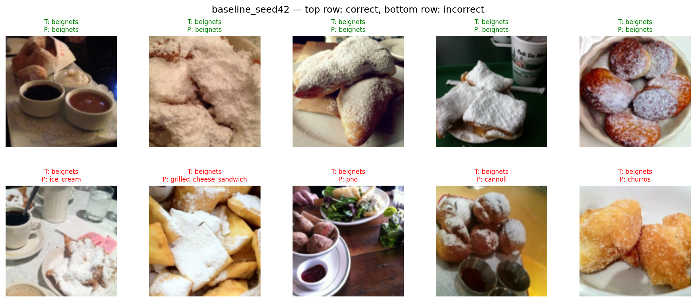
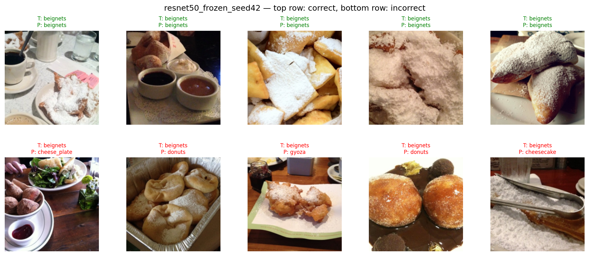
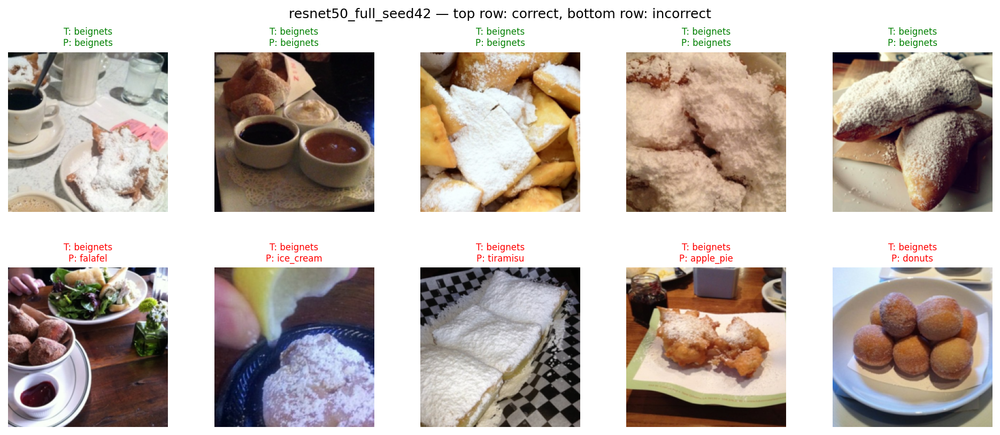
6. Comparison and Discussion
Full fine-tuning achieves the highest test accuracy (84.20%) and macro-F1 (84.19%), outperforming the frozen backbone by 14.91 and 15.23 percentage points, respectively. The baseline CNN achieves only 40.18% accuracy. However, its comparison with ResNet-50 is not controlled, since pretraining, input resolution, learning rate, and parameter count all differ.
The results support the benefit of backbone adaptation within the fixed 30-epoch budget, but the frozen model was still improving at epoch 30, while full fine-tuning peaked at epochs 4-9 and subsequently overfit. Therefore, the performance gap cannot be attributed solely to representation adaptation. Full fine-tuning also requires 35.6% more training time than the frozen variant.
Error analysis reveals persistent confusion between visually similar dishes, particularly steak, filet_mignon, and prime_rib. Full fine-tuning reduces these errors but does not eliminate them, indicating the difficulty of fine-grained food classification.
7. Limitations and Conclusion
The study is limited to Food-101, one pretrained backbone, three training seeds, and a fixed 30-epoch budget. No hyperparameter search, learning-rate scheduler, or early stopping was used. The training split retains documented label noise and potential near-duplicate leakage affecting at most 0.40% of test images. The frozen model had not converged, while full fine-tuning exhibited overfitting.
Under the evaluated protocol, performance consistently follows baseline CNN < frozen ResNet-50 < fully fine-tuned ResNet-50. Full fine-tuning achieves 84.20% ± 0.10 test accuracy and 84.19% ± 0.15 macro-F1, demonstrating its effectiveness for Food-101 within the given compute budget. Future work includes training the frozen model to convergence, investigating regularization and learning-rate schedules, and evaluating higher resolutions and alternative backbones.
8. Reproducibility and Deliverables
- Source code: main.ipynb, src/, PROPOSAL.md.
- Checkpoints: assignment2/checkpoints.
- Results: assignment2/results, summary.csv.
- Report, slides: report, slides.
- AI usage disclosure: assignment2/AI_USAGE.md.
How to reproduce
git clone https://github.com/DangXiMi/CO3133-DeepLearning.git cd CO3133-DeepLearning pip install -r assignment2/requirements.txt jupyter notebook assignment2/notebooks/main.ipynb
Run all cells from top to bottom. The notebook downloads Food-101 and writes the model checkpoints and
results to assignment2/checkpoints and assignment2/results. The multi-seed analysis
aggregates all runs and preserves the same train/validation/test split across model families.